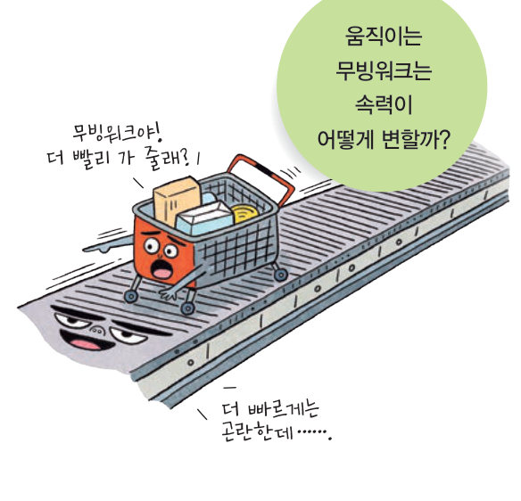
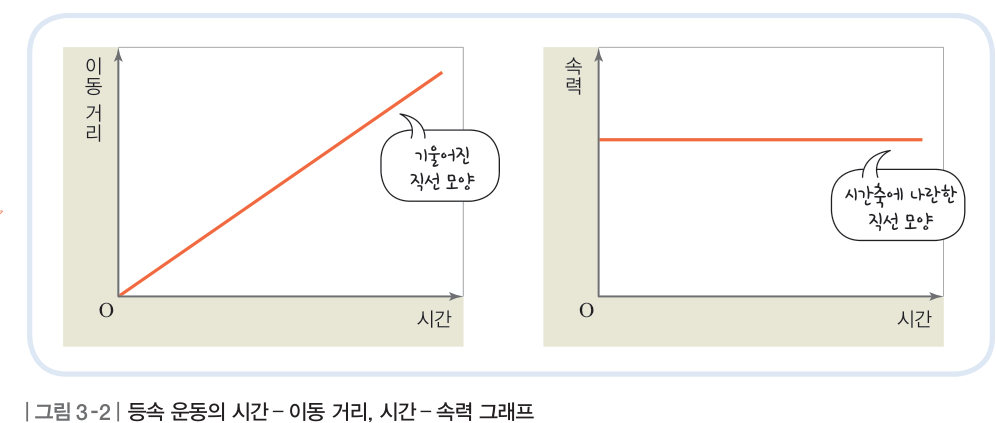

살아있는 교과서 · Ⅳ. 운동과 에너지 · 1. 등속 운동과 자유 낙하 운동 · 02 102~105쪽
속력이
속력이
일정한 운동
움직이는 무빙워크는 속력이 어떻게 변할까? 장난감 자동차의 연속 사진을 분석해 표와 그래프를 완성하고, 무빙워크 두 대의 속력을 바꿔 보며 등속 운동 그래프의 기울기가 무엇을 뜻하는지 알아보자.
🎯 이 단원을 배우면 — 등속 운동을 하는 물체의 시간-이동 거리, 시간-속력의 관계를 설명할 수 있다.
탐구 · 자료 분석 및 해석등속 운동 분석 102~103쪽
무빙워크는 시간에 따라 속력이 일정한 운동을 하는데, 이러한 운동을 등속 운동이라고 한다. 다음 탐구로 등속 운동을 하는 물체의 이동 거리와 속력이 시간에 따라 어떻게 되는지 알아보자.

- 모둠에서 (가)와 (나) 중 한 가지를 선택한 다음, 처음 위치를 기준으로 장난감 자동차가 이동한 거리를 구하여 표에 기록한다.
- 자료 분석 이동 거리를 이용하여 각 구간에서의 거리와 속력을 계산한 다음 표에 기록한다.
- 자료 분석 시간-이동 거리, 시간-속력 그래프로 나타내고 발표한다.
1(가) 처음 위치를 기준으로 자동차가 이동한 거리를 자로 재어 표를 완성해 보자. (사진에서 자동차의 앞쪽 끝을 기준으로)
| 시간(s) | 0 | 1 | 2 | 3 | 4 | 5 |
|---|---|---|---|---|---|---|
| 이동 거리(cm) | 0 |
2(가) 각 구간의 거리와 속력을 계산해 보자.
| 시간(s) | 0~1 | 1~2 | 2~3 | 3~4 | 4~5 |
|---|---|---|---|---|---|
| 속력(cm/s) |
그래프 그리기(가)와 (나)의 그래프를 함께 그려 비교하자
3정리하기 시간에 따라 이동 거리는 . 시간에 따라 속력은 .
4(가)와 (나)는 모두 등속 운동을 하지만, (나)의 속력은 cm/s로 (가)보다 빠르다. 따라서 시간-이동 거리 그래프의 기울기는 .
| 평가 기준 | 스스로 평가 |
|---|---|
| 탐구 기능 이동 거리를 정확하게 측정하고, 속력을 옳게 구하였는가? | |
| 탐구 기능 분석한 자료를 그래프로 옳게 변환하여 해석하였는가? | |
| 인성 모둠 구성원과 협력하며 활동하였는가? |
🔌 아두이노로 직접 재 보자! 초음파 센서로 수평면의 자동차와 빗면의 수레를 기록해 등속 운동과 빨라지는 운동을 비교하는 아두이노 실험 보고서
교과서등속 운동의 그래프 104쪽
등속으로 운동하는 장난감 자동차는 이동 거리가 시간에 비례하여 커진다. 따라서 그림 3-2와 같이 시간-이동 거리 그래프는 기울어진 직선 모양이다. 또한 장난감 자동차의 속력이 일정하므로 시간-속력 그래프는 시간축에 나란한 직선 모양이다. 이때 더 빠른 속력으로 등속 운동을 하면 시간-이동 거리 그래프는 기울기가 더 커지고, 시간-속력 그래프는 더 큰 속력으로 시간축에 나란한 모양이 된다. 일상생활에서는 모노레일, 무빙워크, 스키 리프트 등에서 등속 운동을 볼 수 있다.

무빙워크 두 대속력을 바꾸면 그래프는 어떻게 달라질까?
1과학적 사고력 등속 운동의 시간-이동 거리 그래프에서 속력이 1/3이 되면 그래프의 기울기는 . (시간-이동 거리 그래프의 기울기 = )
🧩 첫 번째 열쇠 (104쪽)
자이로 드롭이 올라갈 때에는 시간에 따라 속력이 일정하므로 ( ) 운동을 한다.
STEAM자동차의 속력 유지 장치 105쪽
자동차에는 운전자가 가속 페달을 밟지 않아도 속력이 일정하게 유지되도록 하는 크루즈 기능이 있다. 이 기능은 자동차 내부의 컴퓨터가 감지기로 계속 속력을 점검하여 속력이 일정하도록 조절한다. 자동차의 속력을 경제 속력으로 맞춰 놓으면 연비를 높일 수 있다.
💬등속 운동의 특성을 이용하여 일상생활에서 편리하게 사용할 수 있는 장치를 고안해 보자. (예: 일정한 간격으로 도미노 조각을 세우는 장난감 자동차)
스스로 확인하기102쪽 학습 목표를 달성했는지 확인해 보자 104쪽
1물체가 등속 운동을 할 때 이동 거리는 시간에 한다.
2물체가 등속 운동을 할 때에는 시간에 따라 속력이 .
개념 확인속력이 일정한 운동
✔옳으면 O, 옳지 않으면 X
| ⑴ 물체의 위치는 시간에 따라 변하지 않는다. | |
| ⑵ 같은 시간 동안 이동한 거리가 일정하다. | |
| ⑶ 속력이 일정한 운동이다. |
2등속 직선 운동을 나타내는 그래프를 모두 고르시오.
3속력이 일정한 운동을 모두 고르시오.
4등속 운동을 기록한 연속 사진에서 물체 사이의 간격은 .
5시간-이동 거리 그래프의 기울기는 과(와) 같고, 시간-속력 그래프 아래 부분의 넓이는 과(와) 같다.
6A는 2 초 동안 4 m, B는 2 초 동안 2 m를 이동하는 등속 운동을 한다. ⑴ A의 속력이 B보다 ⑵ A의 속력은 이다. ⑶ A의 속력은 .
스스로 정리하기속력이 일정한 운동 111쪽
2등속 운동
⑴ 등속 운동: 속력이 한 운동
⑵ 일정한 시간 간격으로 찍은 연속 사진에서 같은 시간 동안 물체가 이동한 거리는 하다.
⑶ 이동 거리는 시간에 하고, 속력은 시간과 관계없이 일정하다. — 예) 모노레일, 무빙워크, 스키 리프트
⑵ 일정한 시간 간격으로 찍은 연속 사진에서 같은 시간 동안 물체가 이동한 거리는 하다.
⑶ 이동 거리는 시간에 하고, 속력은 시간과 관계없이 일정하다. — 예) 모노레일, 무빙워크, 스키 리프트
| 평가 기준 | 스스로 평가 |
|---|---|
| 등속 운동을 하는 물체의 시간-이동 거리, 시간-속력의 관계를 설명할 수 있다. | |
| 그래프의 기울기로 속력을 비교할 수 있다. |
제출학생 정보 · 제출하기
모든 활동을 마친 뒤 제출하면 전체가 한 번에 채점되고 피드백이 나타나요. 답안은 선생님 스프레드시트(중3 탭)에 기록돼요.